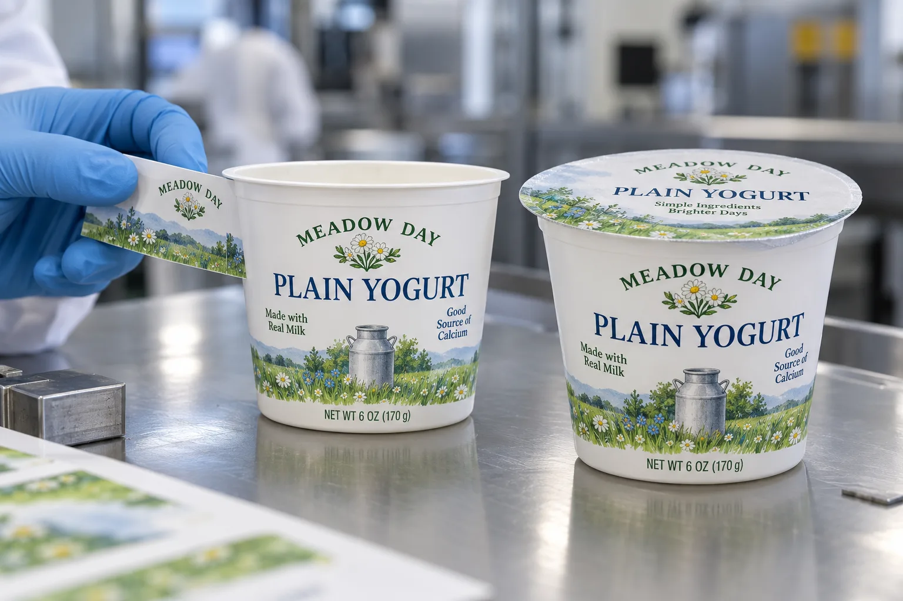

The same width does not fit every height
A yogurt buyer may send one circumference and ask for a full wrap. I would ask for a filled cup instead. Many cups narrow toward the base. A rectangle that sits neatly just below the rim can wrinkle lower down, while a front panel may be perfectly fine. The right answer depends on label height as much as label width.
Avery Dennison's film-facestock selection guide treats container shape and curvature as application decisions. That is a useful reminder to test the final face and adhesive together, rather than choosing a film name from a catalog and assuming the geometry will cooperate.
One cup, two possible label strategies
Imagine a composite small dairy brand with three flavors sold from a refrigerated cabinet. A centered front label can carry the product name and a distinct flavor cue while leaving the strongest taper and cup seam untouched. A separate lid print or top label may help staff identify flavors from above. The tradeoff is two decorated surfaces to control.
A composite co-packer wants a near-full sidewall graphic on the same tub. I would start with paper mockups cut to the proposed die shape, then use printed rolls in a line trial. A shaped dieline or a different decoration method may be more reliable than forcing a long rectangle around a conical wall. The larger artwork area is only valuable if it sits flat after sealing, stacking and refrigeration.
Protect the seal before styling the rim
Measure the usable wall from the lower edge of the flange to the base radius. Keep sidewall labels away from the heat-seal area and any tear tab. The cup should still stack and open as designed. Test labels before and after the intended filling and sealing sequence; a beautiful sample made on an empty cup may not represent production.
| Check | Buyer question |
|---|---|
| Taper | Does the label stay flat at both upper and lower edges? |
| Flange | Is the sealing rim and tear tab fully clear? |
| Moisture | Is the wall dry when the label is applied? |
| Stacking | Do filled cups rub or scuff each other's artwork? |
| SKU control | Can lid and sidewall flavor names be matched at packing? |
Our buying view
Buy usable wall, not maximum coverage
I would rather print a shorter label that runs consistently than a full-height wrap that looks impressive in a flat proof but buckles on a real cup. The proof should include the cup, lid and stack, not just a digital dieline.
Send these cup details for a quote
- Filled cup samples from the intended supplier and tooling.
- Top and bottom sidewall circumferences and usable height.
- Lid material, seal flange and opening tab.
- Application stage, line speed and refrigeration conditions.
- Flavor matrix and whether lids need matching identity.
See our guide to labels on tapered containers for the underlying geometry. For cold conditions, review application versus service temperature.
Frequently asked questions
Can a rectangular label wrap a tapered yogurt cup?
A short front panel may fit, but a full wrap should be trialed on the actual taper and may need a shaped dieline or different decoration method.
Can the side label overlap the foil lid?
Keep sidewall artwork clear of the sealing flange unless the package has a separately designed and validated closure feature.
What should a yogurt brand provide?
Supply filled cups and lids, top and bottom sidewall measurements, label sequence, storage conditions, artwork and SKU count.
Related buyer guides
Review your label specification
Send package photos, label dimensions, material details, quantity and application conditions. Include good and failed samples where possible so the discussion starts with evidence.